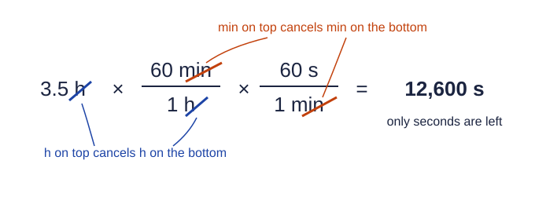

Units and Dimensional Analysis
Every measurement is a number with a unit.
Part 1 · Hook
Why this matters
Part 2 · See it
See it first

Part 3 · Step by step
How it works, step by step
- A measurement is a number and a unit togetherchanging the unit must change the number so the quantity stays the same
- A conversion factor is a ratio of two equal quantities, such as 1000 g / 1 kgmultiplying by it is multiplying by 1, so the quantity does not change
- Units cancel like numbers when the same unit is on the top and the bottomchoosing which way up each factor goes decides which units are left
- When only the wanted unit is leftthe setup is right, and the arithmetic gives the answer in that unit
Part 4 · Key ideas
Key ideas
- Every measured number needs its unit; "12.6" means nothing until it is 12.6 g or 12.6 mL.
- Metric prefixes scale a unit: kilo (k) = 1000, centi (c) = 1/100, milli (m) = 1/1000, micro (µ) = 1/1,000,000, nano (n) = 1/1,000,000,000.
- Dimensional analysis: multiply by conversion factors, each with the unit you have on the bottom, until only the unit you want is left.
- Density = mass ÷ volume (g/mL or g/cm³), and works as a conversion factor between mass and volume. Kelvin = °C + 273.15.
Part 5 · Misconception
A common mistake
The wrong idea: To change kilometers to meters you divide by 1000, because a kilometer is the bigger unit.
What actually happens: A smaller unit needs a larger number to describe the same distance. 2.45 km × (1000 m / 1 km) = 2450 m. Let the units decide: the factor that cancels km is the right one.
Part 6 · Check yourself
Check yourself
Exam-style questions. Anything you miss goes into your review queue.
1. You want to change a volume from milliliters to liters. Which conversion factor do you multiply by?
- 1000 mL / 1 L
- 1 L / 100 mL
- 1 L / 1000 mL
- 1000 L / 1 mL
Show the answer
The unit you want goes on top and the unit you have goes on the bottom: 1 L / 1000 mL.
- 1000 mL / 1 L: This factor is upside down: mL would end up squared instead of canceling.
- 1 L / 100 mL: Milli means one thousandth, not one hundredth; 100 belongs to centi.
- Correct: 1 L / 1000 mL: Right: liters on top, milliliters on the bottom, so mL cancels and L is left.
- 1000 L / 1 mL: A liter is larger than a milliliter, so 1000 L can never equal 1 mL.
2. A hiking trail is 2.45 km long. How long is it in meters?
Type a number in m.
Show the answer
2.45 km × (1000 m / 1 km) = 2450 m. Kilo means 1000, so the number gets 1000 times larger as the unit gets 1000 times smaller.
- Answer: 2450 m
3. A metal block has a mass of 12.6 g and a volume of 4.65 cm³. What is its density? Include the unit.
Type a number and its unit.
Show the answer
Density = mass ÷ volume = 12.6 g ÷ 4.65 cm³ = 2.71 g/cm³. The unit comes straight from the division: grams per cubic centimeter.
- Answer: 2.71 g/cm³
4. Normal body temperature is 37.0 °C. What is it in kelvin?
Type a number in K.
Show the answer
K = °C + 273.15 = 37.0 + 273.15 = 310.2 K. A kelvin is the same size as a Celsius degree; the scale just starts at absolute zero.
- Answer: 310.2 K
5. Which setup converts 3.5 hours into seconds?
- 3.5 h × (1 h / 60 min) × (1 min / 60 s)
- 3.5 h × (60 min / 1 h) × (1 min / 60 s)
- 3.5 h × (60 s / 1 h)
- 3.5 h × (60 min / 1 h) × (60 s / 1 min)
Show the answer
Chain one factor per step, each with the unit you have on the bottom: h → min → s. 3.5 × 60 × 60 = 12,600 s.
- 3.5 h × (1 h / 60 min) × (1 min / 60 s): Both factors are upside down: the units multiply into h²/s instead of canceling.
- 3.5 h × (60 min / 1 h) × (1 min / 60 s): The first factor works, but the second puts seconds on the bottom, giving min²/s.
- 3.5 h × (60 s / 1 h): There are 3600 seconds in an hour, not 60, so this answer is 60 times too small.
- Correct: 3.5 h × (60 min / 1 h) × (60 s / 1 min): Right: hours cancel, then minutes cancel, and seconds are left.
6. A student converts 4250 mg to kilograms and reports 4,250,000,000 kg. What went wrong?
- The student used 100 mg per gram in place of 1000 mg per gram
- Milligrams and kilograms measure different things
- Both factors were upside down, so the number grew instead of shrinking
- The student should have added 1000 instead of multiplying
Show the answer
The right answer is 4250 mg × (1 g / 1000 mg) × (1 kg / 1000 g) = 0.00425 kg. A kilogram is a million times larger than a milligram, so the number must shrink.
- The student used 100 mg per gram in place of 1000 mg per gram: A wrong 100 would give a different error; the reported answer comes from correct factors of 1000 used upside down.
- Milligrams and kilograms measure different things: Both measure mass, and any mass unit can be converted to any other with the right factors.
- Correct: Both factors were upside down, so the number grew instead of shrinking: Right: mg → g and g → kg each make the number smaller. Flipping both makes it a million times larger instead of smaller.
- The student should have added 1000 instead of multiplying: Unit conversions multiply or divide by a factor; adding a number changes the quantity itself.
7. Water has a density of 1.00 g/mL. A 30.0 g plastic bead takes up 25.0 mL. Will the bead float or sink in water, and why?
- Float: its density, 0.833 g/mL, is less than that of water
- Sink: its density, 1.20 g/mL, is greater than that of water
- Sink: its mass, 30.0 g, is greater than 1.00 g
- Float: its volume, 25.0 mL, is greater than 1.00 mL
Show the answer
Density = 30.0 g ÷ 25.0 mL = 1.20 g/mL. An object denser than water sinks.
- Float: its density, 0.833 g/mL, is less than that of water: This divides volume by mass. Density is mass ÷ volume.
- Correct: Sink: its density, 1.20 g/mL, is greater than that of water: Right: 30.0 g ÷ 25.0 mL = 1.20 g/mL, which is more than 1.00 g/mL.
- Sink: its mass, 30.0 g, is greater than 1.00 g: Floating depends on mass per volume, not on mass alone; a heavy wooden beam still floats.
- Float: its volume, 25.0 mL, is greater than 1.00 mL: A large volume alone does not decide it; you need mass divided by volume.
Part 7 · Summary
Summary
Part 8 · Up next
What comes next
Part 9 · Connections